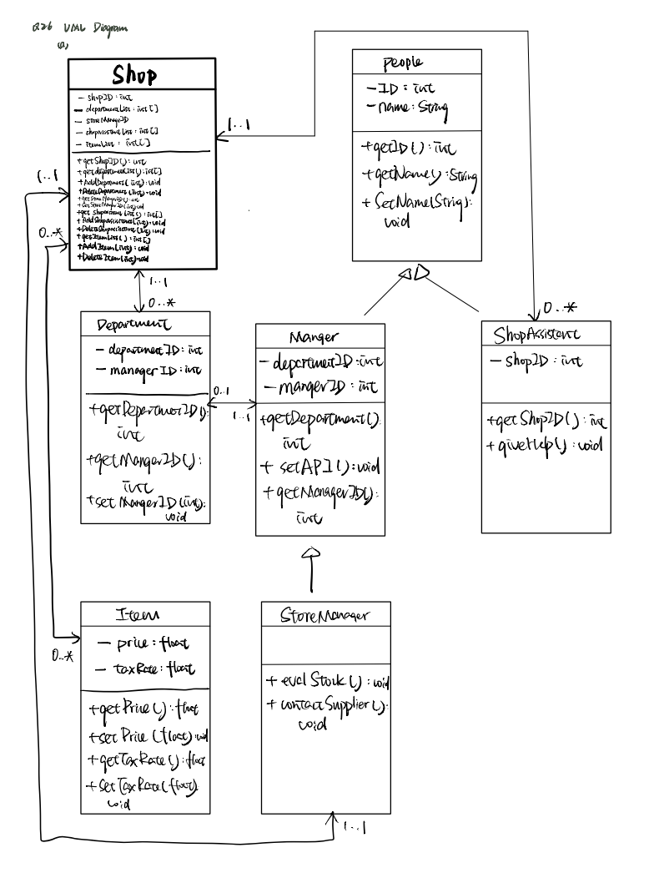

public static void add(int[] xy,int dx, int dy) {
xy[0]+=dx;
xy[1]+=dy;
}
public static void add(int x,int y,int dx, int dy) {
x=x+dx;
y=y+dy;
}
public static void main(String[] args) {
int xypair[] = {1,1};
add(xypair[0], xypair[1], 1, 1);
System.out.println(xypair[0]+" "+xypair[1]);
add(xypair,1,1);
System.out.println(xypair[0]+" "+xypair[1]);
}
xypair is a reference type while xypair[0] is the data stored one the heap pointed by the reference at index 0, so it is an actual value.add(xypair[0], xypair[1], 1, 1): all the arguments are primitive types, so the actual value stored on the heap which is pointed by the reference are not changed. So the result of the first print command is 1 1.add(xypair,1,1): since the add function is overloaded, in this case, we passed a reference type and two primitive types to the overloaded add function. We have modified the value stored on the heap because the reference type passed to the function points to the same data stored on the heap. So the output of the second print statement is 2 2.// Comments:
// Comments:
package which means the files in the same package can have access to this particular member field.GetColour class will compile while the main method in the GetColour2 class will not compile. The reason is that the second class in not in the same package as the Bicycle class, thus it has no access authorities to the fields with a package access modifier, that is, the color field in the Bicycle class.// file1: Bicycle
package bicycle;
public class Bicycle {
String colour = "Green";
Bicycle(){
// ...
}
}
// file2: GetColour
package bicycle;
public class GetColour {
public static void main(){
Bicycle myBike = new Bicycle();
System.out.println(myBike.colour);
}
}
package car;
public class GetColour2 {
public static void main(){
Bicycle myBike = new Bicycle();
System.out.println(myBike.colour);
}
}
// Comments:
(a) A shop is composed of a series of departments, each with its own manager. There is also a store manager and many shop assistants. Each item sold has a price and a tax rate.

(b) Vehicles are either motor-driven (cars, trucks, motorbikes, electric bikes) or human-powered (bikes, skateboards,scooters). All cars have 3 or 4 wheels and all bikes have two wheels. Every vehicle has an owner. Some vehicles must have road tax.
// Comments:
package questions;
public class X {
MODIFIER int value = 3;
};
Another class Y attempts to access the field value in an object of type X. Describe what happens at compilation and/or runtime for the range of MODIFIER possibilities (i.e. public, protected, private and unspecified) under the following circumstances:
(a) Y subclasses X and is in the same package;
public: No compile error or runtime error.protected: No compile error or runtime error since Y is the subclass of X and they are in the same package.private: Compile time and runtime error, because private fields can only be accessed within the same class.unspecified(package): No compile error or runtime error since Y and X are in the same package.(b) Y subclasses X and is in a different package;
public: No compile error or runtime error.protected: No compile error or runtime error since Y is the subclass of Xprivate: Compile time and runtime error, because private fields can only be accessed within the same class.unspecified(package): Compile time and runtime error, because Y and X are not in the same package.(c) Y does not subclass X and is in the same package;
public: No compile error or runtime error.protected: No compile error or runtime error since Y and X are in the same package.private: Compile time and runtime error, because private fields can only be accessed within the same class.unspecified(package): No compile error or runtime error since Y and X are in the same package.(d) Y does not subclass X and is in a different package.
public: No compile error or runtime error.protected: Compile time and runtime error, because Y and X are not in the same package and Y is not a subclass of X.private: Compile time and runtime error, because private fields can only be accessed within the same class.unspecified(package): Compile time and runtime error, because Y and X are not in the same package.// Comments:
public class Test {
public class Dance{
public static void dance(){
System.out.println("Dance");
}
};
public class Jazz extends Dance{
public static void dance(){
System.out.println("Jazz");
}
};
public class Pop extends Dance{
public static void dance(){
System.out.println("Pop");
}
};
public static void startDance(Dance dancer){
dancer.dance();
}
public static void main(String[] args){
Dance dancer1 = new Dance();
Dance dancer2 = new Jazz();
Dance dancer3 = new Pop();
// First advantage:
ArrayList<Dance> danceList = new ArrayList<>({dancer1,dancer2,dancer3});
for (Dance item:danceList){
item.dance();
}
// Second advantage:
dancer1.startDance();
dancer2.startDance();
dancer3.startDance();
}
}
// Comments:
// Comments:
public class Student{
int numTick;
int passNumTick=20;
Student(int numTick){
this.numTick = numTick;
}
// overloading the constructor to allow a change in the number of the ticks for a pass
Student(int numTick, int passNumTick){
this.numTick = numTick;
this.passNumTick = passNumTick;
}
boolean pass(){
return numTick >= passNumTick;
}
}
public class NatsciStudent extends Student{
NatsciStudent(int numTick){
super(numTick,10);
}
boolean pass(){
return Student.this.numTick >= Student.this.passNumTick;
}
}
passNumTick with 20 and use this field in the pass() method so that all the CST student object won't be affected.Student class so that we can pass an additional argument to change the number of the ticks needed for a pass for the NST students.NatsciStudent to override the pass method.// Comments:
(a) Which are the parts of the program which are poorly designed with switch statements for pieces?
icon(), value() validNextPositions() are poorly designed as they contain switch statements that switches based on the name of the pieces.(b) In what ways is your new code easier to maintain than previously? What drawbacks have arisen from this new approach?
Advantages:
Piece class is shorter and much easier to be maintained.Piece class.Piece type at compile-time.Piece class.Disadvantages:
icon() function, the colourSwitch statement needs to be written in every version of the overriding method.// Comments:
public class Shape{
int x;
int y;
Shape(int x,int y){
this.x = x;
this.y = y;
}
void draw(){
System.out.println("Shape");
}
};
public class Triangle extends Shape{
Triangle(int x,int y){
super(x,y);
}
void draw(){
System.out.println("Triangle");
}
}
// ...
public static void main(String[] args){
ArrayList<Shape> shapeList = new ArrayList<>();
for (Shape s:shapeList){
s.draw();
}
}
// Comments:
// Comments:
(a) Write down the asymptotic complexities of the array-based list methods.
addFirst(): O(n) because we have to shift all the elements in the arrayedlist to right for 1 position and then add the new element at index 0.removeFirst(): O(n) because once we removed the first element, all the following elements need to be shifted left by 1 position.get(): O(1) because the items in the arrayedlist are stored in consecutive memory addresses and each item can be fetched in constant time by adding an offset onto the address of the first element.(b) Complete part 3 of the ‘Classic collections’ (adding interfaces) task on Chime.
(c) When adding items to an array-based list, rather than expanding the array by one each time, the array size is often doubled whenever expansion is required. Analyse this approach to get the asymptotic complexities associated with an insertion
doubleSize() operation, all the original elements are copied to a new array with double the size of the original one, this examines n elements in total, this has a time complexity of O(n).n element will require n expanding operations which is ineffective.// Comments:
(a) Complete parts 4 and 5 of the ‘Classic collections’ (queues) task on Chime.
Part 4 Classic collections on Chime
Part 5 Classic collections on Chime
(b) State the asymptotic complexities of the approach.
reverse() function in part 4:
For the LinkedList class:
reverse() function until we have one element left, then reverse the link from that element to the previous one. We also have to set the current element to point to null because we need to ensure the tail element should point to null at the end. Another point to bear in mind is to keep track of the new head element so that we can assign head to this new head element in the end.For the ArrayedList class:
The asymptotic complexity of the operations on the queue:
push(): invokes the addFirst() function on the frontList, so it has a time complexity of O(1). However, if the backList is empty, we need to apply the normalise operation which has a time complexity of O(n). Suppose we push n items and pop the n items back, the amortized number of operations still has a time complexity of O(1).pop(): invokes the removeFirst() function on the backList, so it has a time complexity of O(1). Similarly, if the backList is empty, we need to check the frontList. If the frontList is not empty, then we have to normalise the queue first which has a time complexity of O(n).normalise(): reverse the firstList and replace the backList with the reversed firstList. This operation has a time complexity of O(n) because we have to examine all the elements in the firstList and reverse the link between them.// Comments:
public class Employee{
void doWork(){
System.out.println("I am doing work!!");
}
}
public class Ninja{
void highJump(){
System.out.println("I can do High jump");
}
}
interface combine {
void doWork();
void highJump();
}
public class NinjaEmployee implements combine {
@Override
void doWork(){
System.out.println("I can do work much faster than normal homo sapians");
}
@Override
void highJump(){
System.out.println("I have no time to do high jump because I have loads of work on my desk.");
}
}
Ninjaemployee class needs to inherit from both the Employee class and the Ninja class.Employee class and the Ninja class without giveing any implementation details.Ninjaemployee class implements the interface combine, it needs to override all the methods by providing its own method implementation details.// Comments:
package yz709.com.supervision2;
class A {
private int item;
A(int item) {
this.item = item;
System.out.println("A constructor");
}
}
class B extends A {
// since A has a customised constructor, we have to explicitly invoke the
// super(args list) method
B(int item) {
super(item);
System.out.println("B constructor");
}
}
class C extends B {
// Because of constructor chaining, B has a customised constructor hence we have
// to invoke the super(args list) method in C's construtor as well
C(int item) {
super(item);
System.out.println("C constructor");
}
}
public class ConstructorChaining {
public static void main(String[] args) {
C myC = new C(2);
}
}
/*
*
* output:
*
* A constructor
* B constructor
* C constructor
*
*/
C in the main() method, the constructor of C is invokedC inherits class B, we have to invoke the super(int item) method first to call the constructor of class B.B inherits from class A, so we have to explicitly call the class A constructor using the super(int item) procedure.A runs and print the statement A constructor.B runs and print the statement B constructor.C runs and print C constructor.// Comments:
(a) The mark-sweep schemes delete the marked objects, leaving their memory available. A list of free memory chunks is maintained.
(b) The mark-sweep-compact schemes delete the objects and then compact the memory by moving surviving objects to be adjacent to each other (i.e. no free memory between them).
(c) The mark-copy schemes maintain two memory regions, one of which is active. During the marking process, surviving objects are copied into the other region. Once marking is complete, references are upated to the second region, which becomes active, and the first region is deleted.
O(n) as we have to trace all the objects one by one. Keeping a list of memory can be effective in term of time complexity because when an object is deleted, it requires O(1) operation to add the address onto the list. However, we have to utilise some extra memory to store the list of the free memory chunk addresses. When there are a lot of free memory chunk addresses, the space requirement is big.O(n) since we have to go through all the objects, the deleting procedure is costly as well. Suppose we have a list of memory which has been used, if one object is deleted, then that particular memory space becomes free and we have to shift the used memory up by one. This give us a time complexity of O(n) in the worst case where the first memory space is being freed and all the following memory contents have to be copied int to the previous chunk. The space complexity depends on the amount of memory chunks used, which is the opposite to the space complexity of (a) choice.O(n) if all objects are still surviving. We have to update each reference as well after copying all the surviving objects into the active memory region, which takes O(n) in the worst case as we have to iterate through all object references and update each one in turn.// Comments:
// Comments:
finalizer method will run in the program;finalizer so that gives the programmer less control and might break down the program unexpectly if the object if unexpectly unreachable and the finalizer runs to destruct the object.Finalizer cannot keep up, which eventually cause OutOfMemoryError.JVM implementation-dependent, a program may run very well on one system while having problems on the otherFinalizer attached, because JVM have to perform more operations when constructing and destructing the object containing a non-empty Finalizer.Finalization leads to a case that when a finalizer throws an exception and the finalization process stops, this leaves the object in a corrupted state without any notification.// Comments:
import java.io.Closeable;
import java.io.IOException;
class myClass implements Closeable {
private int item;
myClass(int item) {
this.item = item;
};
public void call() {
System.out.println(item);
}
@Override
public void close() throws IOException {
System.out.println("Closed");
}
}
public class DestructorWithTryFinally {
public static void main(String[] args) throws IOException {
myClass a = new myClass(1);
try {
a.call();
} finally {
a.close();
}
}
}
// Comments:
public static int x() {
try {return 6;}
finally { ... }
}
x(), the try block gets executed but before returning the result, it executes the finally block and in this case print the statement finally block.6 to the main() method.public class Main {
public static int x() {
try {
return 6;
} finally {
System.out.println("finally block");
}
}
public static void main(String[] args) {
System.out.println(x());
}
}
// Comments: